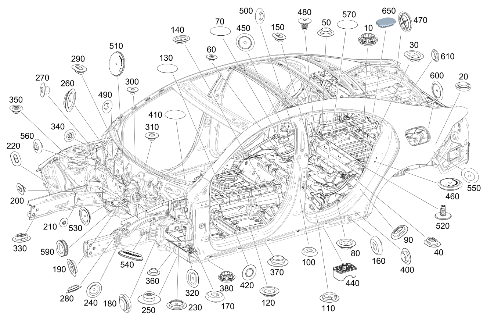

| № | Артикул | Название | Кол. | Примечание | Ограничение |
|---|---|---|---|---|---|
| 10 | A 001 998 55 01 | Сливная втулка | 1 | Водосток сзади слева; 25MM | |
| 10 | A 001 998 55 01 | Сливная втулка | 1 | Водоотвод (центральный) на остове кузова; 25MM | |
| 10 | A 001 998 55 01 | Сливная втулка | 1 | Днище задней части кузова; 25MM | 084 |
| 10 | A 001 998 55 01 | Сливная втулка | 1 | Водосток (центральн.); 25MM | |
| 20 | A 003 998 13 50 | Пробка | 1 | Пол багажника спереди слева; 15 MM | 084 |
| 20 | A 003 998 13 50 | Пробка | 1 | Пол багажника спереди слева; 15 MM | |
| 20 | A 000 998 31 06 | Пробка | 1 | Задняя часть автомобиля слева | 163 |
| 20 | A 000 998 31 06 | Пробка | 1 | Задняя часть автомобиля слева | |
| 20 | A 003 998 13 50 | Пробка | 1 | Пол багажника спереди слева; 15 MM | -084 |
| 20 | A 003 998 14 50 | Пробка | 1 | К боковине сзади слева; 20 MM | -550 |
| 20 | A 003 998 14 50 | Пробка | 1 | К боковине сзади справа; 20 MM | -550 |
| 20 | A 003 998 14 50 | Пробка | 1 | К колесной арке сзади слева; 20 MM | |
| 20 | A 003 998 14 50 | Пробка | 1 | Пол грузового отделения слева; 20 MM | |
| 20 | A 003 998 14 50 | Пробка | 1 | К колесной арке сзади справа; 20 MM | |
| 20 | A 003 998 14 50 | Пробка | 1 | Пол грузового отделения (задняя центральная зона); 20 MM | |
| 20 | A 003 998 14 50 | Пробка | 1 | Пол грузового отделения справа сзади; 20 MM | |
| 30 | A 000 998 05 90 | Запорная шайба | 1 | Пол грузового отделения (справа); 15X25 MM | -084 |
| 30 | A 000 998 05 90 | Запорная шайба | 1 | Пол грузового отделения (справа); 15X25 MM | 084 |
| 30 | A 000 998 05 90 | Запорная шайба | 1 | Пол багажника сзади слева; 15X25 MM | |
| 30 | A 000 998 05 90 | Запорная шайба | 1 | Пол багажника (задняя зона / правая сторона); 15X25 MM | |
| 40 | A 000 998 02 90 | Пробка | 1 | К продольному несущему элементу сзади слева | |
| 40 | A 000 998 02 90 | Пробка | 1 | К продольному несущему элементу сзади справа | |
| 50 | A 003 998 14 50 | Пробка | 1 | Поперечина (внешняя левая сторона); 20 MM | |
| 50 | A 003 998 14 50 | Пробка | 1 | Поперечина (средняя, левая сторона); 20 MM | |
| 50 | A 003 998 13 50 | Пробка | 1 | К продольному несущему элементу сзади слева; 15 MM | |
| 50 | A 003 998 14 50 | Пробка | 1 | Грузовое отделение сзади справа; 20 MM | |
| 50 | A 003 998 14 50 | Пробка | 1 | Багажное отделение сзади слева; 20 MM | |
| 50 | A 003 998 14 50 | Пробка | 1 | Поперечина (внешняя правая сторона); 20 MM | |
| 50 | A 003 998 14 50 | Пробка | 1 | Поперечина (средняя, правая сторона); 20 MM | |
| 50 | A 003 998 13 50 | Пробка | 1 | К продольному несущему элементу сзади справа; 15 MM | |
| 60 | A 001 998 51 50 | Пробка | 1 | На полу под задним сиденьем (передняя левая сторона); 10 MM | |
| 60 | A 001 998 51 50 | Пробка | 1 | На полу под задним сиденьем (задняя левая сторона); 10 MM | |
| 60 | A 001 998 51 50 | Пробка | 1 | На полу под задним сиденьем (передняя правая сторона); 10 MM | |
| 70 | A 006 989 30 85 | Клейкая лента | 1 | Пол в задней части салона слева; 46 MM | |
| 80 | A 003 997 66 86 | Пробка | 1 | Пол в задней части салона, слева; 25 MM | |
| 90 | A 000 998 05 90 | Запорная шайба | 1 | К продольному несущему элементу спереди слева; 15X25 MM | |
| 90 | A 000 998 05 90 | Запорная шайба | 1 | К продольному несущему элементу спереди справа; 15X25 MM | |
| 90 | A 000 998 05 90 | Запорная шайба | 1 | Пол в задней части салона слева; 15X25 MM | |
| 100 | A 003 998 14 50 | Пробка | 1 | Пол в задней части салона, слева; 20 MM | |
| 100 | A 003 998 13 50 | Пробка | 1 | Крышка багажника справа; 15 MM | |
| 100 | A 003 998 13 50 | Пробка | 1 | Пол задней части салона сзади слева; 15 MM | |
| 100 | A 003 998 13 50 | Пробка | 1 | Багажное отделение сзади слева; 15 MM | |
| 100 | A 003 998 13 50 | Пробка | 1 | Пол в задней части салона, сзади справа; 15 MM | |
| 100 | A 003 998 13 50 | Пробка | 1 | Крышка багажника слева; 15 MM | |
| 110 | A 003 997 66 86 | Пробка | 1 | К продольному несущему элементу спереди слева; 25 MM | |
| 110 | A 003 997 66 86 | Пробка | 1 | К продольному несущему элементу спереди справа; 25 MM | |
| 120 | A 003 997 66 86 | Пробка | 1 | Основное днище посередине слева; 25 MM | |
| 120 | A 003 997 66 86 | Пробка | 1 | Основное днище снаружи слева; 25 MM | |
| 120 | A 003 997 66 86 | Пробка | 1 | Основное днище сзади слева; 25 MM | |
| 120 | A 003 997 66 86 | Пробка | 1 | Основное днище сзади слева посередине; 25 MM | |
| 120 | A 003 997 66 86 | Пробка | 1 | Основное днище посередине справа; 25 MM | |
| 120 | A 003 997 66 86 | Пробка | 1 | Основное днище снаружи справа; 25 MM | |
| 120 | A 003 997 66 86 | Пробка | 1 | Основное днище сзади справа; 25 MM | |
| 120 | A 003 997 66 86 | Пробка | 1 | Средняя часть задней правой стороны основного днища; 25 MM | |
| 120 | A 003 997 66 86 | Пробка | 1 | Основное днище посередине; 25 MM | |
| 130 | A 006 989 30 85 | Клейкая лента | 1 | Основное днище сзади слева; 46 MM | |
| 130 | A 006 989 30 85 | Клейкая лента | 1 | Основное днище сзади справа; 46 MM | |
| 140 | A 000 998 06 90 | Запорная шайба | 1 | Основное днище посередине; 20X30 MM | |
| 140 | A 177 374 01 00 | Накладка кулисы КП | 1 | Рычаг селектора АКП | 429/426 |
| 150 | A 002 998 56 50 | Пробка | 1 | Днище задней части салона сзади посередине; 10 X 20MM | |
| 150 | A 002 998 56 50 | Пробка | 1 | Крышка багажника слева; 10 X 20MM | |
| 150 | A 002 998 56 50 | Пробка | 1 | Крышка багажника справа; 10 X 20MM | |
| 160 | A 000 998 49 00 | Пробка | 1 | К колесной арке сзади слева | |
| 160 | A 001 998 58 50 | Пробка | 1 | Порог слева | |
| 160 | A 000 998 49 00 | Пробка | 1 | К колесной арке сзади справа | |
| 160 | A 001 998 58 50 | Пробка | 1 | Порог справа | |
| 170 | A 003 998 14 50 | Пробка | 1 | К основному днищу спереди слева; 20 MM | |
| 170 | A 003 998 14 50 | Пробка | 1 | К основному днищу спереди справа; 20 MM | |
| 170 | A 000 998 32 00 | Пробка | 1 | Пол под педалями слева | |
| 170 | A 000 998 32 00 | Пробка | 1 | Пол под педалями справа | |
| 170 | A 003 998 14 50 | Пробка | 1 | Порог спереди слева; 20 MM | |
| 170 | A 003 998 14 50 | Пробка | 1 | Порог спереди справа; 20 MM | |
| 180 | A 003 998 14 50 | Пробка | 1 | К продольному несущему элементу спереди снизу слева; 20 MM | |
| 180 | A 003 998 14 50 | Пробка | 1 | К продольному несущему элементу спереди слева; 20 MM | |
| 180 | A 003 998 14 50 | Пробка | 1 | К продольному несущему элементу снаружи слева; 20 MM | |
| 180 | A 003 998 14 50 | Пробка | 1 | К продольному несущему элементу спереди сверху слева; 20 MM | |
| 180 | A 003 998 14 50 | Пробка | 1 | К продольному несущему элементу спереди сверху справа; 20 MM | |
| 180 | A 003 998 14 50 | Пробка | 1 | К продольному несущему элементу снизу справа; 20 MM | |
| 180 | A 003 998 14 50 | Пробка | 1 | К продольному несущему элементу снаружи справа; 20 MM | |
| 180 | A 003 998 14 50 | Пробка | 1 | К продольному несущему элементу спереди снизу справа; 20 MM | |
| 190 | A 000 998 06 90 | Запорная шайба | 1 | Туннель коробки передач спереди слева; 20X30 MM | |
| 190 | A 000 998 06 90 | Запорная шайба | 1 | Туннель трансмиссии спереди справа; 20X30 MM | |
| 200 | A 002 998 56 50 | Пробка | 1 | К моторному щиту снизу слева; 10 X 20MM | |
| 200 | A 002 998 56 50 | Пробка | 1 | К продольному несущему элементу изнутри слева; 10 X 20MM | |
| 200 | A 002 998 56 50 | Пробка | 1 | К продольному несущему элементу изнутри справа; 10 X 20MM | |
| 210 | A 001 998 51 50 | Пробка | 1 | К продольному несущему элементу изнутри слева; 10 MM | |
| 210 | A 001 998 51 50 | Пробка | 1 | К продольному несущему элементу изнутри справа; 10 MM | |
| 210 | A 001 998 51 50 | Пробка | 1 | К продольному несущему элементу снаружи слева; 10 MM | |
| 220 | A 002 998 56 50 | Пробка | 1 | К поперечине изнутри справа; 10 X 20MM | |
| 230 | A 003 997 67 86 | Пробка | 1 | Пол под водителем, спереди слева; 30 MM | |
| 230 | A 003 997 67 86 | Пробка | 1 | Пол под водителем, спереди справа; 30 MM | |
| 240 | A 003 997 66 86 | Пробка | 1 | К продольному несущему элементу снаружи слева; 25 MM | |
| 240 | A 003 997 66 86 | Пробка | 1 | К продольному несущему элементу снаружи справа; 25 MM | |
| 250 | A 000 998 10 90 | Пробка | 1 | К продольному несущему элементу спереди слева; 25 MM | |
| 250 | A 000 998 10 90 | Пробка | 1 | К продольному несущему элементу спереди справа; 25 MM | |
| 260 | A 003 997 67 86 | Пробка | 1 | Моторный щит, изнутри слева; 30 MM | |
| 260 | A 003 997 67 86 | Пробка | 1 | Моторный щит, изнутри справа; 30 MM | |
| 270 | A 000 998 18 50 | Пробка | 1 | Моторный щит снаружи слева; 11 MM Рулевое управление: Влево | |
| 270 | A 000 998 18 50 | Пробка | 1 | Моторный щит снаружи слева; 11 MM Рулевое управление: Вправо | |
| 270 | A 003 998 14 50 | Пробка | 1 | Боковина изнутри слева; 20 MM | |
| 270 | A 000 998 18 50 | Пробка | 1 | Моторный щит снаружи справа; 11 MM Рулевое управление: Вправо | |
| 270 | A 000 998 18 50 | Пробка | 1 | Моторный щит снаружи справа; 11 MM Рулевое управление: Влево | |
| 270 | A 003 998 14 50 | Пробка | 1 | Боковина изнутри справа; 20 MM | |
| 280 | A 003 998 14 50 | Пробка | 1 | К продольному несущему элементу снизу изнутри слева; 20 MM | |
| 290 | A 002 998 56 50 | Пробка | 1 | Поперечина под ветровым стеклом справа; 10 X 20MM | |
| 300 | A 000 998 11 90 | Запорная шайба | 1 | Поперечина под ветровым стеклом посередине; 6.5 MM | |
| 300 | A 000 998 11 90 | Запорная шайба | 1 | Поперечина под ветровым стеклом слева; 6.5 MM | |
| 310 | A 001 998 51 50 | Пробка | 1 | Поперечина под ветровым стеклом посередине; 10 MM | |
| 320 | A 000 998 06 90 | Запорная шайба | 1 | Лонжерон спереди слева; 20X30 MM | |
| 320 | A 000 998 06 90 | Запорная шайба | 1 | Лонжерон спереди справа; 20X30 MM | |
| 320 | A 000 998 25 90 | Запорная шайба | 1 | Продольный несущий элемент спереди; 25X55MM | |
| 330 | A 000 998 05 90 | Запорная шайба | 1 | Продольный несущий элемент внизу слева; 15X25 MM | |
| 330 | A 000 998 05 90 | Запорная шайба | 1 | Продольный несущий элемент внизу справа; 15X25 MM | |
| 340 | A 001 998 51 50 | Пробка | 1 | Боковина изнутри слева; 10 MM Рулевое управление: Влево | |
| 340 | A 001 998 51 50 | Пробка | 1 | Боковина изнутри справа; 10 MM Рулевое управление: Вправо | |
| 350 | A 001 998 51 50 | Пробка | 1 | Чашка амортизационной стойки слева; 10 MM | |
| 350 | A 001 998 51 50 | Пробка | 1 | Чашка амортизационной стойки справа; 10 MM | |
| 360 | A 000 998 68 03 | Пробка | 1 | К основному днищу спереди слева | |
| 360 | A 000 998 68 03 | Пробка | 1 | К основному днищу спереди справа | |
| 370 | A 003 998 14 50 | Пробка | 1 | Облицовка порога слева; 20 MM | |
| 370 | A 003 998 14 50 | Пробка | 1 | Порог спереди слева; 20 MM | |
| 370 | A 003 998 14 50 | Пробка | 1 | Слева посередине; 20 MM | |
| 370 | A 003 998 14 50 | Пробка | 1 | Порог посередине слева; 20 MM | |
| 370 | A 003 998 14 50 | Пробка | 1 | Сзади слева; 20 MM | |
| 370 | A 003 998 14 50 | Пробка | 1 | Порог сзади слева; 20 MM | |
| 370 | A 003 998 14 50 | Пробка | 1 | Колесная арка сзади, сверху; 20 MM | |
| 370 | A 003 998 14 50 | Пробка | 1 | Порог слева; 20 MM | |
| 370 | A 003 998 14 50 | Пробка | 1 | Колесная арка сзади слева; 20 MM | |
| 370 | A 003 998 14 50 | Пробка | 1 | Облицовка порога справа; 20 MM | |
| 370 | A 003 998 14 50 | Пробка | 1 | Порог спереди справа; 20 MM | |
| 370 | A 003 998 14 50 | Пробка | 1 | Справа, посередине; 20 MM | |
| 370 | A 003 998 14 50 | Пробка | 1 | Порог посередине справа; 20 MM | |
| 370 | A 003 998 14 50 | Пробка | 1 | Порог сзади справа; 20 MM | |
| 370 | A 003 998 14 50 | Пробка | 1 | Порог правый (внутренняя секция / задняя зона); 20 MM | |
| 370 | A 003 998 14 50 | Пробка | 1 | Порог справа; 20 MM | |
| 370 | A 003 998 14 50 | Пробка | 1 | Колесная арка сзади справа; 20 MM | |
| 370 | A 003 998 14 50 | Пробка | 1 | Накладка правой колёсной арки (задняя сторона); 20 MM | |
| 380 | A 001 998 55 01 | Сливная втулка | 1 | Порог спереди слева; 25MM | |
| 380 | A 001 998 55 01 | Сливная втулка | 1 | Порог сзади слева; 25MM | |
| 380 | A 001 998 55 01 | Сливная втулка | 1 | Порог спереди справа; 25MM | |
| 380 | A 001 998 55 01 | Сливная втулка | 1 | Порог сзади справа; 25MM | |
| 400 | A 003 998 14 50 | Пробка | 1 | Снизу слева сзади; 20 MM | |
| 400 | A 003 998 14 50 | Пробка | 1 | Порог сзади слева; 20 MM | |
| 400 | A 003 998 14 50 | Пробка | 1 | Снизу справа сзади; 20 MM | |
| 400 | A 003 998 14 50 | Пробка | 1 | Порог сзади справа; 20 MM | |
| 410 | A 006 989 30 85 | Клейкая лента | 1 | К продольному несущему элементу изнутри слева; 46 MM | |
| 410 | A 006 989 30 85 | Клейкая лента | 1 | К продольному несущему элементу изнутри справа; 46 MM | |
| 420 | A 003 998 14 50 | Пробка | 1 | К продольному несущему элементу изнутри слева; 20 MM | |
| 420 | A 003 998 14 50 | Пробка | 1 | К продольному несущему элементу изнутри справа; 20 MM | |
| 440 | A 000 583 34 03 | Зажим домкрата | 1 | Передн. прав. | |
| 440 | A 000 583 34 03 | Зажим домкрата | 1 | Справа сзади | |
| 440 | A 000 583 34 03 | Зажим домкрата | 1 | Сзади слева | |
| 440 | A 000 583 34 03 | Зажим домкрата | 1 | Лев. передн. | |
| 450 | A 003 997 67 86 | Пробка | 1 | Колесная ниша справа; 30 MM | |
| 460 | A 000 998 50 00 | Пробка | 1 | Ниша багажного отделения (спереди) | |
| 460 | A 000 998 50 00 | Пробка | 1 | Ниша багажного отделения (спереди) | 804/805/806 |
| 460 | A 000 998 50 00 | Пробка | 1 | Ниша багажного отделения (спереди) | |
| 470 | A 001 998 81 50 | Пробка | 1 | К задней панели кузова справа; 40 MM | |
| 480 | A 000 998 06 00 | Пробка | 3 | На поперечине за полом под задним сиденьем (правая сторона) | 7U1 |
| 480 | A 000 998 06 00 | Пробка | 1 | На поперечине за полом под задним сиденьем (центральная зона) | (7U2/555)+287 |
| 490 | A 003 998 13 50 | Пробка | 1 | Моторный щит изнутри; 15 MM | |
| 500 | A 001 998 51 50 | Пробка | 1 | Средняя стойка слева; 10 MM | |
| 500 | A 001 998 51 50 | Пробка | 1 | Средняя стойка справа; 10 MM | |
| 510 | A 003 998 98 50 | Пробка | 1 | Моторный щит посередине Рулевое управление: Вправо | |
| 510 | A 003 998 99 50 | Пробка | 1 | Моторный щит посередине Рулевое управление: Влево | |
| 510 | A 000 998 25 00 | Пробка | 1 | Моторный щит, снаружи | |
| 520 | A 003 998 63 50 | Пробка | 4 | Поперечина ниши в грузовом отделении (передняя) | -(U79/6U7) |
| 520 | A 003 998 63 50 | Пробка | 4 | Поперечина ниши в грузовом отделении (передняя) | |
| 520 | A 003 998 63 50 | Пробка | 4 | Поперечина ниши в грузовом отделении (передняя) | |
| 520 | A 003 998 63 50 | Пробка | 1 | Продольный силовой элемент ниши в грузовом отделении (левый) | M608/M654 |
| 520 | A 003 998 63 50 | Пробка | 1 | Продольный силовой элемент ниши в грузовом отделении (левый) | M654 |
| 520 | A 003 998 63 50 | Пробка | 1 | Продольный силовой элемент ниши в грузовом отделении (левый) | M654 |
| 530 | A 003 997 66 86 | Пробка | 1 | Моторный щит, снизу слева; 25 MM | |
| 530 | A 003 997 66 86 | Пробка | 1 | В моторном щите для компенсационного шланга; 25 MM Рулевое управление: Вправо | 426/429 |
| 530 | A 003 997 66 86 | Пробка | 1 | В моторном щите для компенсационного шланга; 25 MM Рулевое управление: Влево | |
| 530 | A 003 997 68 86 | Пробка | 1 | Трубопровод сцепления к моторному щиту; 35 MM Рулевое управление: Вправо | 426/429 |
| 530 | A 003 997 68 86 | Пробка | 1 | Трубопровод сцепления к моторному щиту; 35 MM Рулевое управление: Влево | |
| 530 | A 003 997 66 86 | Пробка | 1 | Моторный щит, снизу справа; 25 MM | |
| 540 | A 000 998 45 00 | Пробка | 1 | Моторный щит, снизу | |
| 550 | A 003 997 66 86 | Пробка | 2 | Колесная ниша сзади слева и справа; 25 MM | |
| 560 | A 000 998 68 03 | Пробка | 1 | Моторный щит, сверху посередине | -411 |
| 590 | A 000 998 71 00 | Пробка | 1 | К моторному щиту посередине снизу | M654 |
| 590 | A 000 998 99 00 | Втулка запорная | 1 | Трубопровод сцепления к моторному щиту | M282+(426/429)/M260/M654+(429/426) |
| 600 | A 003 997 68 86 | Пробка | 1 | Пол задней части кузова слева; 35 MM | |
| 600 | A 003 997 68 86 | Пробка | 1 | Пол задней части кузова справа; 35 MM | |
| 610 | A 003 998 14 50 | Пробка | 1 | Центральный элемент задней части кузова вверху; 20 MM | |
| 650 | A 003 998 24 50 | Пробка | 1 | На многофункциональном поддоне | 084/802/803 |
| 650 | A 003 998 24 50 | Пробка | 1 | На многофункциональном поддоне |
Позиций: 188 · подписано на схемах: 188 · колесо — плавный зум в курсор, перетаскивание — пан, двойной клик — зум, клик по артикулу — скопировать · наведите на строку или цифру на схеме — подсветка связки, клик — закрепить.